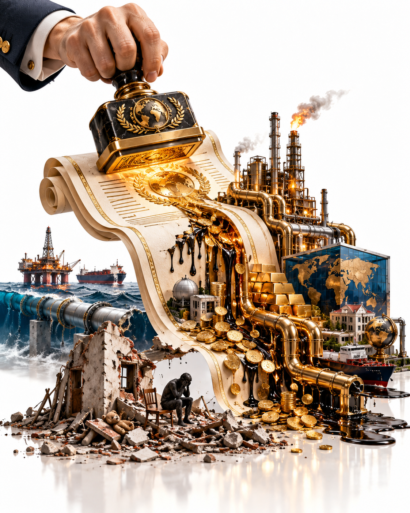
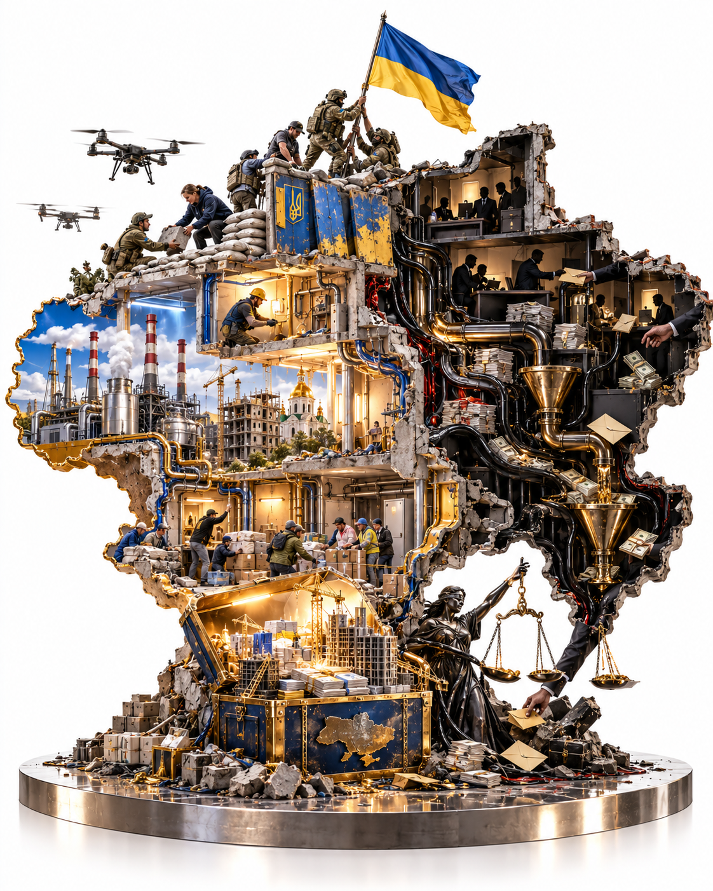
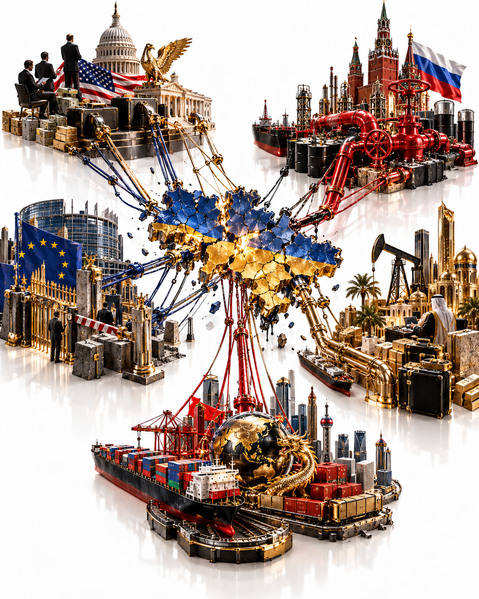
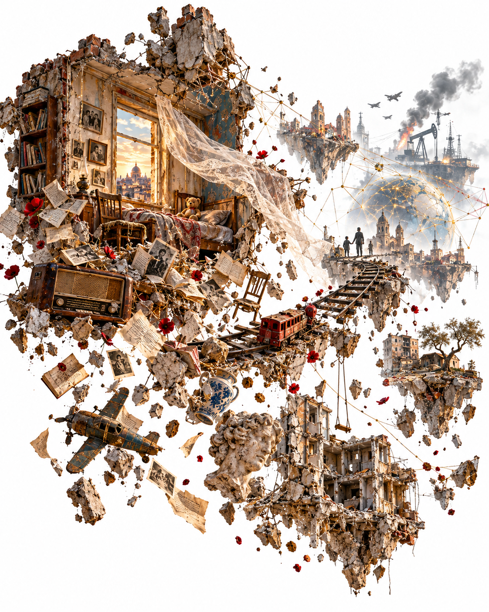

This text is written from the position of observation. Separate facts do not always reveal the picture. Sometimes they conceal it until they are placed side by side. Then a pattern of connections begins to emerge. It does not yet prove a common design, but it points to where we should look. What matters is not only what the participants say, but also which conditions constrain their choices, who gains access to the decision, and what begins to move before the public announcement. Refusing to see these connections is not neutrality. Here the facts are placed side by side, and thought follows what they point towards.
I. The Tanker Left Before the Announcement
On the ninth of October Volodymyr Zelensky told journalists that the Ukrainian negotiating team was being used as a smokescreen, and called it unfair (Ukrinform). The Ukrainian delegation was sitting in Miami with American envoys and European diplomats. On the table were security guarantees, postwar reconstruction and the road into the European Union. In those same hours Donald Trump, after a ninety-minute conversation with Vladimir Putin, announced a diesel deal. That evening the US Treasury issued General License 135 for the sale, delivery, offloading and importation of diesel of Russian origin (OFAC, Axios).
But this story has a date that stands earlier than the announcement.
The tanker MINERVA ZEN, sailing under the Greek flag and built in 2009, left St Petersburg on the twenty-second of September. The ship tracking service VesselFinder shows a declared destination of Wilmington, North Carolina, and an estimated arrival on the eleventh of October. The vessel's last public signal dates from the end of September (VesselFinder). According to the analytics firm Vortexa, it carries about two hundred and eighty thousand barrels of diesel and gasoil (Nasha Niva). OSINT channels reported that the tanker was bound for the US East Coast from the very start (UNN). Nasha Niva openly allows that the destination may have changed after the deal.
Here a particular kind of care is needed. The destination on a ship's record is entered by the crew, and it can be changed at sea. The public record shows the current entry. It does not show when that entry first appeared. An estimated arrival is an intention, not a berth. An AIS signal is like the light of a long-extinguished star. It tells where the ship was and what it declared about itself. It does not tell who owns the cargo or what was agreed on shore.
The ship sailed seventeen days before the deal.
On the day it left, the destination market was shut by three locks at once. A US law of 2022 bans imports of Russian petroleum products (text of the law). Russia itself had banned diesel exports since July, with exemptions for the Eurasian Economic Union and intergovernmental agreements (EADaily). License 135 did not yet exist.
There are several explanations, and none of them is yet established. The voyage may have been built from the start on the expectation that the window would open by the time of arrival. The cargo may have been prepared as a flexible option, ready for any outcome, with the right to change port and buyer. The destination may have changed at sea, after the announcement. The cargo may turn out not to be of Russian origin, may be in transit to a third country, or may be moving under another legal regime. Documents on the cargo's origin, buyer and charterer have not been published. Only they can settle the dispute between the versions. The bill of lading, the certificate of origin, the charter party and the day-by-day history of the AIS entries.
International trade does not begin with a presidential speech. Before the speech there are already a seller, a buyer, a charter, insurance, a bank and a berth. If the voyage was built around the opening window, then at least some of these participants were counting on the decision before Ukraine, which learned of it an hour before the announcement (Axios, interview with Zelensky). The early departure does not by itself prove that everyone knew.
There is arithmetic too. Two hundred and eighty thousand barrels is roughly thirty-seven thousand tonnes. That is about one eighth of the first batch Trump announced, and less than a tenth of a single day's US distillate consumption. For the market this tanker changes nothing. For understanding how the deal is built it may mean a great deal. If the declared route is confirmed, it will be the first to physically enter a window that was officially opened after it set sail.
A smokescreen does not necessarily hide a conspiracy. More often it hides a sequence. The public is shown the day of the announcement. The history of the decision stays out of frame. To see it, one has to walk back through the calendar.
II. The Calendar of One Month
The separate news items of this autumn read like different stories. Lined up by date, they become one. The calendar here follows the date of the event, not the date of publication. Some events reached the press weeks after they happened, and that gap is itself part of the picture.
- 5 September. Putin receives Witkoff and Kushner in the Kremlin, with Kirill Dmitriev beside him. According to the New York Times, Putin himself proposes the sale of Lukoil's foreign assets as proof that Russians and Americans can do business. This became public only at the start of October (Cyprus Mail citing Reuters, Meduza, EU Alive).
- 13 September. Trump publicly demands that Zelensky stop striking Russian refineries and calls those strikes the reason for expensive diesel (LIGA).
- 18 September. Trump signs Lindsey Graham's law on sanctions against Russia and Iran (Kyiv Post). The same day the Treasury updates its guidance on Lukoil. Negotiating a sale is permitted. The sale itself is not (OFAC).
- 21 September. A conversation between Trump and Zelensky. According to Axios, the word diesel comes up many times (Reform).
- 22 September. MINERVA ZEN leaves St Petersburg. The same day Zelensky meets Trump in New York (VesselFinder, Axios).
- 23 and 24 September. Dmitriev meets Witkoff and Kushner in New York. The topics are economic cooperation, energy and Ukraine (CNN as reported by Ukrainian News). Zelensky tells Axios that the idea of a mutual energy ceasefire came from the Americans (Axios).
- 1 October. One of the heaviest Russian strikes on the Ukrainian power grid in months, seven dead (Reuters via Tribune).
- 3 October. The New York Times reports that the war talks include a multibillion-dollar deal over Lukoil's assets (WION).
- 7 October. Putin's birthday.
- 8 October. Reuters reports on discussions of Nord Stream and Lukoil between Kushner and Dmitriev (Reuters via Internazionale). The same day Britain imposes 38 new sanctions on Russian oil, the shadow fleet and crypto platforms (GOV.UK).
- 9 October. Talks in Miami. Trump's call with Putin. The diesel deal and License 135. All four Moscow airports restrict flights because of a drone attack (Moscow Times).
- 10 October. Guided bombs destroy part of an apartment building in Zaporizhzhia. Initial reports put the death toll at twenty, three of them children (Ukrainska Pravda). Ushakov says Putin made no commitment to resume negotiations (Kyiv Post). Peskov says Putin passed Tehran's vision for ending the war with Iran on to Trump (CNBC). The same day Trump says it is time for Ukraine to find a new leader who can make a deal, and once again blames Zelensky for expensive diesel. Sybiha replies that the president has the support of his people and that the decision belongs to Ukrainians (CBS News).
- 11 October. Zelensky says Ukraine is ready to stop striking Russian refineries if Russia verifiably stops striking Ukrainian energy. According to him, Russia struck the power sector one hundred and ninety-six times in a single week. If Washington wants elections in wartime, let it secure a sixty-day ceasefire from Moscow. Ukrainian drones halt a Yandex data centre in Vladimir. The same day Trump writes that an energy ceasefire is in effect from this moment and that both sides have agreed. At the time of these reports the Kremlin had not confirmed its agreement. No start time, scope or verification mechanism has been named (Kyiv Post, Axios, CBS News). The same date stands on the ship's record as the estimated arrival of MINERVA ZEN in Wilmington.
In this sequence the economic line comes first. The asset deal is proposed at the start of September. Pressure on Kyiv over the refineries builds in the middle of the month. The tanker leaves the day after a conversation in which the word diesel comes up many times. Russia's investment negotiator arrives in New York right after the ship sails. The political announcement closes the chain rather than opening it.
A chronology does not prove a prior agreement. Dates can stand next to each other for different reasons. The calendar does something else. It raises questions that are hard to wave away.
This calendar has a reverse side as well. Between the first date and the last, Russia kept striking and gave not a single verifiable commitment. The concessions moved in one direction. So did the pressure. A day before the ceasefire was announced, the president of the United States suggested that a country at war replace its president. The announcement of a ceasefire came after the concession, not before it, and for now it remains the word of one side.
III. War at One Table, Economics at the Other
According to Axios, Washington asked Kyiv at least six times to stop striking Russian oil refineries. Unilaterally. Kyiv proposed reciprocity. Ukraine stops striking the refineries, Russia stops striking Ukrainian power plants. An American official replied that Trump does not consider these strikes equivalent (Axios). A Ukrainian source says Witkoff and Kushner threatened to cut Kyiv off from intelligence. The American side denies the threat and in the same breath reminds everyone of the ammunition and intelligence Ukraine receives. Each of these claims belongs to its own speaker, and it weighs exactly as much as that speaker.
Ukraine's foreign minister Andrii Sybiha named what is happening plainly. Easing sanctions does not bring peace closer and does not help the markets. Only an energy ceasefire can lower prices, and Ukraine is ready for one now. Putin sees weakness in such steps (Kyiv Post).
The official explanation of the deal is concern for fuel prices. The arithmetic sharply limits it. The first three stages Trump announced, three hundred thousand tonnes at once, five hundred thousand in November and a million after that, come to one million eight hundred thousand tonnes. That is roughly three and a half days of American consumption (Kyiv Post, Al Jazeera). A further three million tonnes was also mentioned, but conditionally, depending on the state of Russian capacity. Together that makes four million eight hundred thousand, about nine days of consumption by the same estimate. The United States is itself the world's largest diesel exporter. In early October it was shipping out about one million seven hundred and sixty thousand barrels of distillates a day and bringing in about one hundred and eighteen thousand (DTN). Analyst Tom Kloza called the announcement noise and put the effect at the pump at seven or eight cents a gallon (Newsweek). The market, however, does not live on tonnes alone. The price of fuel also moves on expectation, on fear of shortage, on signal. A signal is a commodity too.
Bringing Russian fuel into the country remains legally contested (Diplomacy and Law). The 2022 law does not reduce the lifting of the ban to a single phrase about the end of the war. It sets three conditions. Russia has withdrawn its forces and ceased hostilities in a manner acceptable to Ukraine. Russia poses no immediate threat to NATO members. Ukraine is free to choose its own government (text of the law). None of the three has been met. How a Treasury license relates to a federal statute remains an open legal question. After the words about a new Ukrainian president, the third condition sounds especially sharp.
A small volume limits the price explanation. By itself it does not prove another purpose. But it moves the search elsewhere.
One possible direction is visible in Trump's own words. He made the full volume of supplies depend on the condition of Russian refineries (Al Jazeera). The more intact Russian refining is, the more fuel reaches the market. From that moment a Ukrainian drone over a Russian refinery also strikes an American deal. Washington becomes a party with an interest in keeping intact the infrastructure of a state waging war on an ally. This may explain why the request to Kyiv was one-sided. It may also explain why, the day after the deal, the American president began to talk about replacing the Ukrainian one.
The same Russian refinery now exists in four versions. For the Ukrainian command it is the aggressor's infrastructure. For the American administration it is part of the world's fuel supply. For the Kremlin it is a source of revenue for the war budget. For an investor it is an asset whose price depends on sanctions.
The refinery has not changed. What has changed is whose reading becomes binding on everyone else. In October that right was taken by the side that holds the Treasury's authorization. The economic decision is already in force. The political result exists, for now, as a post on social media.
IV. The Ring of Capital
At the table of the war talks sit people whose professional language is the language of deals. Their biographies are known one by one. Laid together, they form a ring.
But the ring has links of different kinds. An investment is not the same as a post. A post is not the same as a deal. A deal is not the same as a conversation, and a shared photograph is not the same as coordinated action. On a diagram they all look like identical lines between names. In meaning they weigh differently. So below, each link is given its type.
Kirill Dmitriev. Head of the Russian Direct Investment Fund and Putin's envoy. An investment link. In 2015 the Saudi sovereign fund PIF agreed to invest about ten billion dollars in Russia through his fund over five years (CNBC). A negotiating link. According to Reuters, Dmitriev has long pushed to resume Russian gas sales to Germany, has become one of Moscow's main channels to Washington, met representatives of the US Departments of Energy and the Treasury in September, and plans to meet the leadership of Alternative for Germany early next year (Reuters via Internazionale).
Jared Kushner. The president's son-in-law and an envoy at the talks. Founder of the fund Affinity Partners. An investment link. The same Saudi PIF invested two billion dollars in it (Bisnow). In 2024 Ron Wyden, then chairman of the Senate Finance Committee, reported that Affinity had received up to one hundred and fifty-seven million dollars in fees from foreign clients, eighty-seven million of it from the Saudi government, while showing its investors no returns as of July 2024 (US Senate). This is the position of an opposition senator, not a court ruling. At the end of 2024 Qatar's sovereign fund QIA and the Abu Dhabi fund Lunate added another one and a half billion to Affinity (AGBI).
Steve Witkoff. Trump's longtime business partner, who came to diplomacy from real estate development. A family and business link. Two of his sons are listed as cofounders of the crypto company World Liberty Financial, and he and Trump are listed as cofounders emeritus. According to the Wall Street Journal, a few days before the inauguration investors linked to Sheikh Tahnoun bin Zayed Al Nahyan, the UAE national security adviser, bought forty-nine per cent of the company for about half a billion dollars. A few months later the UAE gained access to advanced American AI chips. The White House and the company deny any connection (Philadelphia Inquirer citing the WSJ). The sequence here is established. The causation is not.
Todd Boehly. American billionaire and co-owner of the LA Dodgers. In 2022 he led the group that bought Chelsea from Roman Abramovich. A political link. He donated two million dollars to Trump's political projects (WION, Meduza).
The Al-Khayyat brothers. Qatari businessmen Moutaz and Ramez. They attended Trump's inauguration in 2025. A business link. Together with Kushner and Ivanka Trump they are financing a resort project in Albania (WION).
Now these lines can be laid together.
The Saudi PIF has been linked to Dmitriev's fund since 2015 and to Kushner's fund since 2022. Qatari and Abu Dhabi capital stands behind Affinity. According to WION, Tahnoun takes part in overseeing Lunate, one of the major investors in Kushner's fund, and holds a stake in the Witkoff family's company. The Al-Khayyats are building a resort with Kushner. Boehly funds Trump's political projects.
And it is precisely Boehly, Tahnoun and the Al-Khayyats who, according to the Financial Times, are named as potential buyers of Lukoil's foreign assets, whose sale Kushner and Witkoff are discussing with Dmitriev (Meduza).
The circuit closes. Negotiators from both sides and potential buyers of the very subject of the negotiations are linked through one and the same belt of Gulf sovereign capital. This is not proof of a crime. Former US prosecutor Hui Chen calls it a question of conflict of interest (Meduza). Witkoff's spokeswoman denies any conflict. The ring exists as an object of inquiry. A single centre that steers it has not been established. But the structure is visible without any confessions. The people on whom the sanctions authorization depends and the people who could profit from that authorization have known each other for a long time, and with money between them.
V. Lukoil. How the Principle Changes
Lukoil's foreign assets are not a single refinery. They are oil fields, European refineries and hundreds of filling stations in Europe and the United States, in about thirty countries in all. They are valued at twenty to twenty-two billion dollars. Sanctions crashed their value, and investors expect it to rise once sanctions are lifted (WION).
The history of these assets over a single year shows not a change of buyers. It shows a change of principle.
In autumn 2025 the United States imposed sanctions on Lukoil. The Treasury allowed sale negotiations on strict terms (Orda.kz). On the seventh of November 2025 the Treasury publicly called the trader Gunvor, which was bidding for these assets, the Kremlin's puppet. The formula was simple. As long as Putin keeps killing, nobody gets a license to operate and profit. Gunvor withdrew its bid (gCaptain). In January 2026 Lukoil signed a conditional agreement with the American fund Carlyle, but it never received Treasury approval (EU Alive).
On the fifth of September 2026 the sale is proposed by Putin himself, and he proposes it to Trump's envoys. The potential buyers named are people linked to the Trump and Witkoff families. The American state corporation DFC is discussing taking part. A White House representative confirmed to Reuters that Witkoff and Kushner, together with DFC, had sought a substantial upfront payment and a profits interest for the United States. The scheme under discussion assumes that American authorities will lift sanctions (Reuters via Internazionale).
Here the law itself deserves a hearing, because it is stricter than the headlines. The Treasury's current License 131J permits negotiations and contingent contracts with Lukoil. It does not permit the sale or transfer of the assets themselves. Any such contract must be made contingent on a separate authorization. The Treasury has stated in advance the minimum condition for that future authorization. Money owed to Lukoil must sit in a blocked account under American jurisdiction until sanctions are lifted (OFAC). The deal is not closed. DFC holds no stake in these assets. Ownership has not changed hands.
But the principle has already shifted. Within a year the formula of no profit while the killing goes on has turned into talks over what share of the profit the American state will receive. The killing has not stopped. On the day the diesel deal was announced, the Zaporizhzhia building was still standing. The next morning bodies were being carried out of it.
The mechanism is visible too, for now as a model. A state imposes a restriction. The restriction drives down the price of an asset. The asset is sold at a crisis price to those close to the decision on lifting the restriction. Once it is lifted, the price rises. The difference between the two prices is the value of access to power. For the model to become a fact, one needs the purchase price, the terms of settlement, the legal entities of the buyers, the source of their money and the date sanctions are lifted. Not one of these figures is yet in the public domain.
Here this mechanism is called negotiated financialization. Talks on ending a war become the place where property is distributed. The discussion of economic benefit within the political process is not a guess here. It is documented in the White House's own words. The deal is not closed, its price and final beneficiaries have not been published, and the buyers are still potential. But the direction of travel is already on record.

VI. One Institution, Two Directions
The US International Development Finance Corporation, or DFC, is the American state development finance corporation. In this story it appears twice.
The first time in Ukraine. The US-Ukraine Reconstruction Investment Fund was created under an intergovernmental agreement. DFC contributed seventy-five million dollars and Ukraine the same. Management is split equally. The fund's priorities are critical minerals, energy, oil and gas, ports and infrastructure, and the American side is particularly interested in gas projects (Ukrainian government website, UATV). This is an established fund with announced capital.
The second time in the discussion of Lukoil's assets. The same corporation is named as a possible member of a consortium with investors from Qatar and the UAE, through which the United States could receive a payment and a share of the profit (Reuters via Internazionale). This is a reported plan, not an established structure. And in any Nord Stream deal, according to the White House, Russia would have to negotiate precisely with DFC and the Treasury. An American investor's profit in that case would be tied to gas supplies to Europe after the war ends.
Between these two directions stand the same people. A few days after the Moscow meetings Kushner spoke in Kyiv about prosperity agreements (Reuters via Internazionale). In Miami the envoys presented Ukraine with a postwar reconstruction financing package and briefed the Europeans on possible energy deals with Russia (Axios).
At one end, Ukraine's mineral wealth and gas. At the other, Russian oil assets and a Russian gas pipeline. In the middle, an American state institution that already co-owns a fund in Ukraine and is discussed as a participant on the Russian side. This is not necessarily a single secret plan. The legal grounds and terms differ. But the institutional line is one.
Peace is being designed as a portfolio. It holds a share in the reconstruction of the victim and a possible share in the assets of the aggressor. And the portfolio itself is being assembled before the war has been stopped.
Hence questions that are almost never asked in the daily news. Whose interests is one and the same state instrument bound to weigh on both sides of the front? Who assesses the conflict of interest? Who holds the right of final consent? And who will write the rules of the postwar economy, the states on whose land the assets lie, or those who hold the capital and the right to change the terms of sanctions?
VII. Europe. The Right to Say No
A Nord Stream arrangement can be agreed in Moscow and Washington. It cannot be carried out without Europe. The pipeline runs not only along the seabed. It runs through European law.
Gazprom owns fifty-one per cent of the company that controls the pipes. Two German shareholders hold thirty-one per cent and want to keep their stakes if Gazprom sells its own. The pipes are under US and EU sanctions. The German government does not want them reopened. Bundestag member Michael Kellner called the potential deal a dirty one, in which America and Russia split the profit and Europe pays. Poland is firmly opposed (Moscow Times).
In January 2026 the European Union adopted a regulation on a complete exit from Russian gas. Liquefied gas is banned from the start of 2027, pipeline gas from the autumn of 2027 (Enerdata). Since February 2023 a European embargo on Russian petroleum products, diesel included, has been in force (gCaptain). So the American License 135 removes only the American layer of the ban. European decisions do not vanish after a single telephone call between Moscow and Washington. Russian fuel will not legally reach Europe, where the diesel shortage is most acute.
The divergence inside the Western camp shows in the dates. On the eighth of October Britain sanctions the oil companies Zarubezhneft and INK, twelve tankers and crypto platforms. London says its sanctions now cover more than ninety per cent of Russian oil production capacity (GOV.UK). On the ninth of October the United States eases its own sanctions on Russian diesel. The American license changes American sanctions. It does not automatically open the world market to Russian diesel, and it does not lift the European ban. And still, Ukraine's two main allies walk in opposite directions one day apart. This is a difference of instruments and interests. By itself it is not yet a final strategic rupture.
Nor is Europe united. Germany's Alternative for Germany supports restarting the pipeline, and it is with its leadership that Dmitriev plans to discuss gas. In this way a line from the ring of capital reaches into European politics. On the sixth of January 2026 Zelensky, Macron and Starmer signed the Paris Declaration on security guarantees with a multinational force after a ceasefire. No date for its entry into force has been set, and everything hangs on a ceasefire that Russia does not accept (Euromaidan Press).
The result is a paradox. Security guarantees wait for a ceasefire. Economic relief does not.
In this story it matters not only who is able to reach an agreement. It matters just as much who is able to block its execution. Europe has its own law, its own sanctions and its own territory, on which Lukoil's refineries stand and the pipes lie. This is the right to say no. It is not a footnote to the American-Russian dialogue. It belongs to those through whose land and jurisdiction any future deal would have to pass. The only question is whether Europe will use it.
VIII. Ukraine From Within
An inquiry into the financial interests of American and Russian negotiators stays dishonest if the Ukrainian system is left outside the brackets. A method that cannot turn towards its own side becomes a weapon. Zelensky represents a state resisting an invasion. But inside that state the same mechanism of access works on a small scale.
In November 2025 the National Anti-Corruption Bureau announced Operation Midas around the state company Energoatom. According to investigators, contractors were made to pay ten to fifteen per cent of contract values, and about one hundred million dollars passed through a Kyiv office to be laundered (Ukrainska Pravda). The alleged organizer named was Tymur Mindich, co-owner of the Kvartal 95 studio and a former business partner of Zelensky. He left the country before the searches. In January 2026 papers on him were sent to Interpol, and in March prosecutors requested his extradition from Israel (Mezha). Former energy minister Herman Halushchenko was still in custody in this case in April 2026 (Ukrainska Pravda). Andriy Yermak, the former head of the Presidential Office, resigned in November 2025 after searches, and in May 2026 was served a notice of suspicion in a case of laundering about four hundred and sixty million hryvnias through luxury construction near Kyiv. He called the suspicion groundless (ecoi.net).
These are investigators' versions, not verdicts. Suspicion is not indictment, and indictment is not verdict. In April 2026 the bureau's head Semen Kryvonos said the case would reach court. The later status of the proceedings has not been checked here.
The point is not the names. War turns energy into a question of survival. A state energy contract becomes urgent. People who stand between the contract and the contractor collect a price for access. The same formula as in the model around Lukoil. Access to a decision has a cash price. The difference lies in scale, and in the fact that one is framed as a state deal while the other is classed as a crime. That is a legal distinction, and a substantial one. The comparison here is structural, not equating. But the mechanism is recognizable.
There is a second side as well. Ukraine's anti-corruption bodies reached the president's business partner, a former minister and the former head of his office, in wartime. Inside the state there are not only those who concentrate resources but also institutions able to move against their own government. In the American part of the ring this role is so far played only by inquiries from opposition senators and by reporters.
The war also creates new forces. Commanders, veterans, volunteers, drone engineers. After the war they will demand a place in the new order. So Ukraine is not simply a territory that others intend to rebuild to their own blueprints. Nor is it a chair that can be vacated on demand from outside. It will decide for itself what model of property and power arises on its land, and who will lead it.

IX. The Gulf, China, Iran. The Second Circle
Seen from higher up, the ring of capital turns out to be part of a larger circle.
The Gulf states are not observers here. Saudi capital works with Dmitriev's fund and with Kushner's fund. Qatari and Emirati capital stands behind Affinity and is named in the Lukoil scheme under discussion. Sheikh Tahnoun is at once the UAE national security adviser, head of a sovereign fund, chairman of the AI company G42, co-owner of the crypto company of the Trump and Witkoff families and a potential buyer of Russian assets (Philadelphia Inquirer citing the WSJ, WION). Security, technology, the family business of American negotiators and Russian oil meet in a single person.
Sovereign funds often take part in competing projects at the same time. That does not prove a single command. But it reveals the main property of international capital. It binds with money political centres that publicly stand on opposite sides of the front. The Gulf turns out to be not a mediator between Washington and Moscow. It turns out to be a common investor in both.
Since 2022 China and India have become the main buyers of Russian oil. As early as May 2022 China was for the first time buying more than two million barrels of Russian oil and fuel a day, and India overtook Germany (Oil and Gas 360, citing the International Energy Agency). For Russia the Asian market has become a condition of budget survival. For Beijing Russia is just one supplier among many. This asymmetry gives Beijing leverage, but does not make Moscow its instrument.
Iran closes the circle. Shipping through the Strait of Hormuz is severely disrupted, though deliveries resumed in September. On the twenty-sixth of September Pezeshkian said Iran no longer trusts negotiations with Washington, and that its messages are carried by Qatar and Pakistan (Al Jazeera). Two weeks later the Kremlin says Putin passed Tehran's vision on to Trump in agreement with Pezeshkian (CNBC). Diesel is getting more expensive above all because of the strait. The record US price in September was linked precisely to the disruption there (FleetOwner).
Moscow's position here is unique. It wages war on Ukraine. It earns from oil made dearer by the Iran war. And, according to the Kremlin, it offers Washington mediation in settling that very war. The crisis that raises the price of its goods also raises the price of its diplomatic offer. In such a picture the diesel license may look like part of a calculation. There is no document of such an exchange, and Tehran still has other channels. This version remains a hypothesis. But the overlap of interests can be observed directly.

X. Five Mechanisms and Five Limits
A list of those who gain from a crisis is endless and explains nothing. Repetition explains. The same mechanism, seen in different places, stops being a coincidence. But every mechanism also has its limit, the point where it stops working. A mechanism without a limit becomes a faith.
First. Access to authorization has a price. A sanction drives down the value of an asset. Whoever can lift the sanction controls the difference. License 135, Lukoil's assets, Nord Stream. On a small scale, the same in the Midas case. The limit. The price of access is proven by a specific transaction, not by people's closeness to power.
Second. Dependence turns into leverage. Ukraine depends on American intelligence and weapons, and the request to stop the strikes is heard against the background of that dependence. On the ninth of October six requests to Kyiv remain unanswered. On the tenth comes the suggestion to replace the president. Russia depends on export revenue and offers access to its assets as a gesture of goodwill. America depends on fuel prices before an election and presses the one who depends on it most. The limit. What is needed is not only the conditions of dependence, but traces of its use in a specific conversation. The words about a new president leave such a trace in public.
Third. Property is redistributed before the order is settled. Assets that lost their markets because of the war may pass to new owners at the moment their price is lowest. Lukoil's foreign business and a stake in Nord Stream are being discussed while the war goes on. The limit. Redistribution becomes a fact only with the date of a legal transfer, and there is no such date yet.
Fourth. The institutions of war become the institutions of peace. Sanctions licenses, reconstruction funds and state development corporations were created for pressure and for aid. Now postwar property begins to be distributed through them. This does not mean their participants want the war to go on. It means that institutions outlive the reasons for which they were created. The limit. One institution's part in two projects does not yet make them a single portfolio under a single decision.
Fifth. The process runs ahead of the announcement. Putin proposes the Lukoil sale a month before the press learns of it. The tanker leaves seventeen days before the license. Ukraine learns of the deal an hour in advance. Whoever is inside the process can know the day of the announcement beforehand. Whoever is outside learns of it last. The limit. Early activity proves the mechanism only when its link to the later decision is confirmed by a document.
Together these five mechanisms form one construction. In it information, access and capital move through the same channels, while the risk and the cost stay outside. The strength of this construction is that every one of its supports can be tested, and every one can be knocked down.
XI. What Lies Behind the Smokescreen
Behind the smokescreen there is no single treaty on Ukraine's future. Behind it a struggle is under way for the right to set the terms of the passage from war to a new order.
For Moscow that means territory, sanctions and a return to Western capital without giving up the war. For Washington it means prices, elections, rivalry with China and a share for American capital in the postwar economy. For Europe it means security and no return to the old dependence. For Ukraine it means an end to aggression, sovereignty, the right to choose its own government and people's lives. For investors it means the difference between the price under sanctions and the price after them.
These interests do not merge into one plan. But they create a field in which talks on ending the war become, at the same time, talks about property.
The central hypothesis is this. Participants with access to the decision gain economic and political advantages not after the war ends, but in the very process of negotiating it. That is why economic concessions run ahead of the end of violence rather than following it.
This hypothesis is not alone in the field. Four other explanations stand beside it, and an honest analysis looks not for what fits them all but for what tells them apart.
Early coordination. The tanker, the license and the talks about assets were parts of one movement agreed in advance. It would be confirmed by an early record of the route, by the cargo's commercial documents and by their link to the Treasury's decision.
Commercial option. The market prepared a flexible delivery in advance, in case the conditions changed, and would have switched port or buyer under a different outcome. It would be confirmed by the absence of an early American destination in the AIS history and by a charter party with an open port of discharge.
Independent lines. Diesel was dictated by the fuel market, while the talks on Lukoil and Nord Stream run in parallel, without a common centre. It would be confirmed by the absence of cross-conditions and by different sets of participants. For now, the fact that both lines share the same envoys stands against it.
Conditional reciprocity. The relief was part of a wider construction and will hold only with a real, mutual halt to the strikes. It would be confirmed by a ceasefire recognised by both sides, with a clear start and a verification mechanism.
On the eleventh of October this fourth version faced its first test. Trump announced an energy ceasefire. Kyiv replied that it was ready if Russia stopped striking its energy system, and asked for a start time to be named. At the time of these reports Moscow had not confirmed its agreement. No verification mechanism has been described. A similar announcement a month earlier was never confirmed by either side, and the strikes on energy went on (Axios). For now this is a statement, not a fact of strikes ceasing. If both sides confirm it and the strikes really stop, the central hypothesis will weaken and the version of conditional reciprocity will grow stronger. If not, the order of events stays the same. The concession first, the words about peace after.
Today the case for the central hypothesis includes the diesel license issued without a reciprocal commitment. It includes the tanker that left before the license. It includes the Lukoil deal discussed during the bombardments. Against it stands one verified detail. According to Reuters, an American investor's profit from Nord Stream would come only after the war ends. Against it stands also the strictness of the Treasury. The current license authorizes negotiations, while the sale itself requires separate authorization.
The hypothesis can be tested, and the signs are known in advance.
- Whether Moscow and Kyiv confirm the announced ceasefire, name a start time and a verification mechanism, and whether the strikes actually stop.
- Whether the diesel license is extended or widened without a verifiable halt to Russian strikes on energy.
- Whether the Lukoil deal receives a separate Treasury authorization while the war goes on, and whether the proceeds stay in a blocked account.
- Who turns out to be the final buyer, and whether DFC receives any share, and which.
- What the day-by-day AIS history of MINERVA ZEN, its customs documents and the administration's certification to Congress, if one was sent, will show.
- Whether anything changes in Russia's ability to wage war and Ukraine's ability to defend itself.
If commercial concessions begin to be tied to a real end of violence, the hypothesis weakens. If deals expand without reciprocal commitments, the hypothesis gains support. That would still not be direct proof, since deals can expand for other reasons too. An inquiry that declares in advance that any outcome confirms it becomes a smokescreen itself. An inquiry that is afraid to draw a conclusion becomes part of one.
XII. The Shattered World
There is something that fits into none of these constructions. No bill of lading and no corporate register can fill it.
A common cultural world in which millions of people once lived. A language that lived far beyond Russia's borders. Books read in Riga, Kyiv, Minsk, Moscow and Dublin. Shared memories, family stories, intonations. The habit of recognising a person before recognising their state.
This space was never uniform. Its peoples had different fates and different memories of the state. But between them ran ties that needed no license.
The Russian state turned culture into the ideology of the Russian world, and the ideology into a justification for war. Culture does not belong to the state the way an army does. But a state is able to bind cultural symbols to violence so tightly that people begin to reject what was part of their own lives.
The owner of a pipeline can be changed. A license can be issued and revoked. A new fund can be opened. No single treaty can restore trust between people for whom a shared language was a meeting place and has become a reason for suspicion.
Behind the whole architecture of deals one more territory disappears. Not a state territory. A human one. It cannot be bought at a crisis price, and it cannot be sold once sanctions are lifted.

XIII. After the Curtain
The word smokescreen carries a temptation. Behind it one wants to find at once a hidden centre of will, a single director, a single hand. It is the same temptation that feeds propaganda, and a method has to withstand it. One cannot fault another's picture of the world for its absolute enemy and its inevitable history, and then build the same picture oneself.
Zelensky's words about a smokescreen at first sound like a complaint about one unfair day. Someone reached an agreement without Ukraine. Someone learned of the decision too late.
But seen from above, the smokescreen turns out to be far larger than a negotiating room in Miami. Behind it is a tanker that left before the license. Assets offered by Putin. Potential buyers from the negotiators' circle. Sovereign funds linked to both sides. An American state corporation that co-owns a reconstruction fund in the victim's country and is discussed as a participant in a deal over the aggressor's assets. Europe with its right to say no. Ukraine with its resistance, its own Midas and its right to choose its own president.
All of them are inside one process. But they do not steer it to the same degree. And they do not answer for it to the same degree. Complexity of causes does not mean symmetry of responsibility. The decision to go to war was made in Moscow, and the complexity of the picture does not dissolve that fact.
If every image is removed from this text, the smokescreen, the ring, the portfolio, the curtain, a dry residue remains. A license has been issued. There is no reciprocal commitment. The aggressor's assets are being discussed with people whose business ties lead to the potential buyers. A country at war has been told to replace its president. A ceasefire has been announced by one side. The strikes continued up to the last verified date. This residue holds without metaphors.
The main observation comes down to one thing. The political order after the war is shaped not only by those who decide the question of war and peace, but also by those who decide in advance which deals will become possible after it. Sometimes these are the same people.
The end of the war and a new economic order are different events. The first means that people stop being killed. The second decides who will own, trade and rule, and on what terms. They can go together. They can drift apart.
In the autumn of 2026 they have already drifted apart in time. The architecture of the future economy is under discussion, and part of it has already been licensed. The end of violence exists, for now, as an announcement. This is where the word smokescreen takes on its most troubling meaning. It hides not a secret conspiracy. It hides a system already able to discuss the consequences of a war without having agreed on its end.
And then one question remains.
At what moment does peace stop being the goal of negotiations and become their optional appendix?
Sources
Data as of the eleventh of October 2026. Figures on casualties, deliveries, the ceasefire and the negotiations continue to change. The origin and buyer of the MINERVA ZEN cargo, and the history of its declared destination, have not been documented. This is an analytical essay, not a judicial or forensic finding. Some secondary reports rely on anonymous sources, and several publications citing a single Reuters report are not counted as independent confirmations.
Primary documents
- OFAC, 9 October 2026, General License 135 on Russian diesel
- OFAC, FAQ 1224, updated 18 September 2026, License 131J and the conditions for selling Lukoil's assets
- Text of the US Ending Importation of Russian Oil Act, 8 April 2022
- US Senate Finance Committee, 25 September 2024, Affinity's fees
- GOV.UK, 8 October 2026, new UK sanctions
- Ukrainian government website, the US-Ukraine Reconstruction Investment Fund
The tanker and the diesel deal
- VesselFinder, MINERVA ZEN vessel page
- Nasha Niva, the first tanker with Russian diesel off the US coast, Vortexa data
- UNN, 10 October 2026, OSINT on the arrival of the first shipment
- Ukrinform, 10 October 2026, Zelensky on the team as a smokescreen
- Axios, 10 October 2026, a US official on the deal and the Miami talks
- Axios, 9 October 2026, interview with Zelensky
- Kyiv Post, 10 October 2026, Ushakov on the call and delivery volumes
- Kyiv Post, 10 October 2026, Sybiha on an energy ceasefire
- Al Jazeera, 10 October 2026, why the US turned to Russian diesel
- DTN, 9 October 2026, futures, stocks, US exports and imports
- Newsweek, 9 October 2026, analysts' assessments
- Diplomacy and Law, legal analysis of License 135
- EADaily citing Reuters, 21 September 2026, exemptions from the Russian diesel export ban
The tenth and eleventh of October
- CBS News, 11 October 2026, Trump on a new Ukrainian president and the ceasefire announcement
- Axios, 11 October 2026, Trump announces an energy ceasefire, Kyiv's response
- Kyiv Post, 11 October 2026, the ceasefire, Zelensky's conditions, no confirmation from the Kremlin
Chronology and negotiations
- Cyprus Mail citing Reuters, 3 October 2026, summary of the New York Times on Lukoil
- Meduza, 5 October 2026, the NYT and FT on potential buyers of Lukoil's assets
- WION, 3 October 2026, Lukoil's assets and investors from Trump's circle
- EU Alive, Lukoil, Boehly and the Dmitriev channel
- Reuters via Internazionale, 8 October 2026, Nord Stream, Lukoil and DFC
- Moscow Times, 8 October 2026, Nord Stream and Germany's position
- Ukrainian News citing CNN, Dmitriev's meeting with Witkoff and Kushner in New York
- Axios, 24 September 2026, Zelensky on an energy ceasefire
- Kyiv Post, the Lindsey Graham law, signed on 18 September 2026
- Moscow Times, 9 October 2026, restrictions at Moscow airports
The ring of capital and Lukoil
- CNBC, July 2015, PIF and the Russian Direct Investment Fund
- Bisnow, 11 April 2022, PIF and Affinity Partners
- AGBI, December 2024, QIA and Lunate in Affinity
- Philadelphia Inquirer citing the WSJ, February 2026, Tahnoun and World Liberty Financial
- Orda.kz, Treasury conditions for the sale of Lukoil's assets
- gCaptain, 7 November 2025, Gunvor and the Kremlin's puppet
- UATV, September 2025, the reconstruction fund's priorities
Europe, Ukraine, Iran
- Enerdata, January 2026, the EU regulation on Russian gas
- gCaptain, the European embargo on petroleum products
- Euromaidan Press, 6 January 2026, the Paris Declaration
- Ukrainska Pravda, 11 November 2025, Operation Midas
- Mezha, 23 April 2026, the NABU chief on the Midas case
- Ukrainska Pravda, 15 April 2026, Halushchenko in custody
- ecoi.net, May 2026, notice of suspicion to Andriy Yermak
- Oil and Gas 360, the International Energy Agency report for May 2022
- Al Jazeera, 26 September 2026, Pezeshkian on talks with the US
- FleetOwner, 22 September 2026, record diesel price and the Strait of Hormuz